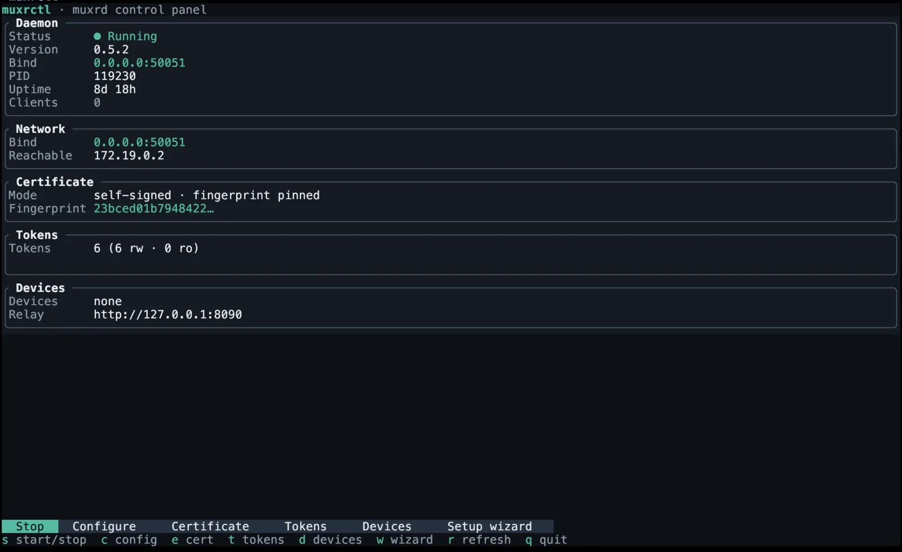

Advanced Setup
Everything off the quick start path: the dashboard, the command line, LAN, a public domain and the Docker rig.
The muxrctl dashboard
Once set up, muxrctl opens on the dashboard: five panels for the daemon, network, certificate, tokens and devices. Each key opens a dialog; Esc closes it.

| Key | Action |
|---|---|
| s | start or stop the daemon |
| c | bind host and port |
| e | certificate: mode, fingerprint, SANs, advertised trust, regenerate |
| t | tokens: create, show pairing QR, revoke |
| d | devices registered for push notifications |
| w | reopen the setup wizard |
| r | refresh |
| q | quit |
The CLI route
Every wizard step is a muxrd subcommand, for scripted installs. Replace 100.x.y.z with your server's address.
Create the data directory (~/.local/share/zellij/muxrd/ on Linux) and a self-signed certificate for that address (--san is repeatable; MUXRD_SAN takes a comma-separated list):
muxrd init --san 100.x.y.zStart the daemon, detached (MUXRD_BIND also sets the address; the default, 127.0.0.1:50051, is unreachable from a phone):
muxrd start --bind 100.x.y.z:50051 --daemonizeMint a token, a view-only token, and one that stops pairing new devices after 24 hours (--expires-in takes 30m, 24h, 7d or never, the default):
muxrd create-token --name mobile
muxrd create-token --name viewer --read-only
muxrd create-token --name guest --expires-in 24hManage them, and the daemon:
muxrd list-tokens
muxrd revoke-token guest
muxrd status
muxrd stopA token's secret is printed only at creation and stored only as a hash, so neither it nor its pairing QR can be shown again; if you lose it, revoke the token and mint a new one. Pair a CLI-minted token by hand: enter the host and paste the secret on the app's Connect screen.
LAN instead of a tailnet
Bind a LAN address and list it in the certificate, or TLS verification fails:
muxrd init --san 192.168.0.42
muxrd start --bind 192.168.0.42:50051--bind 0.0.0.0:50051 listens on every interface and lets the QR advertise a real address; on a host with a public interface that also exposes the port, so firewall it.
Changing the SANs means a new certificate: rerun muxrd init with the new --san or regenerate from the dashboard (e), restart the daemon, and re-pair every phone.
A LAN address only works on that LAN; a tailnet follows the phone onto mobile data.
Public domain — least recommended
A public domain puts muxrd on the open internet: anyone with your DNS name and a token can reach it. It suits only something you would be comfortable making public, like the read-only demo at demo.muxr.app; for your own machine use a tailnet.
A public listener changes the threat model.
- Every host on the internet can reach the login endpoint; the bearer token is the only barrier.
muxrd revoke-token <name>is the kill switch: it invalidates the token and every live session minted from it. - muxrd has no per-login session isolation: everyone presenting the same token attaches to the same session and sees the same activity.
- Whatever terminates TLS in front of muxrd sees your terminal traffic and bearer tokens in plaintext.
- Edge proxies commonly drop idle connections after a minute or two, so a viewer parked on a silent pane can be cut off.
Behind a TLS-terminating reverse proxy
The proxy owns the public certificate, terminates TLS, and proxies gRPC over HTTP/2 to muxrd as plaintext h2c. muxrd listens only on a private address the proxy can reach; never publish that port.
muxrd start --bind <private-address>:50051 --insecure-h2c --i-know-this-is-behind-a-proxymuxrd refuses a non-loopback h2c bind without the second flag, because the proxy-to-muxrd hop is plaintext. The phone dials your.host:443 and the QR carries tm=ca. A self-signed muxrd behind such a proxy needs Advertised trust set to CA in the certificate dialog.
Serve your own certificate
Point muxrd at a publicly trusted certificate for your DNS name, with no proxy in front:
muxrd init --tls-cert /path/fullchain.pem --tls-key /path/privkey.pem
muxrd start --bind 0.0.0.0:50051 --tls-cert /path/fullchain.pem --tls-key /path/privkey.pemThe phone dials your.host:50051; type the port, because a bare host defaults to 443 under Public domain (CA). Restart muxrd after every renewal. A self-signed certificate with --san your.host also works: the QR then pins the fingerprint, but the host is exposed the same way.
Environment variables and mode precedence: see the README.
Harden it like the demo
- Firewall to
22,80and443behind a proxy, or50051alone for a direct certificate. - Run muxrd as an unprivileged user in a container with a read-only root filesystem, no Linux capabilities and resource limits; the demo's compose files are the template.
- Mint read-only tokens for anyone you do not fully trust.
- Keep
muxrd revoke-tokenat hand. - Test the long-lived attach through your proxy on a real device before publishing a QR.
Docker dev rig
The repository's Compose rig builds and runs muxrd in a container, with no local Rust toolchain or zellij needed. From a clone of muxr-core:
docker compose -f docker/compose.yaml up --buildSet BIND_ADDR to publish on a tailnet or LAN address; the rig adds it to the certificate's SANs, and it also publishes the rig's passwordless SSH port (2222) there:
BIND_ADDR=100.x.y.z docker compose -f docker/compose.yaml up --buildReset all container state, volumes included:
docker compose -f docker/compose.yaml down -vThe rig uses passwordless SSH and self-signed certificates. Do not expose it on the public internet or any untrusted network.
Profiles and options: see the README.